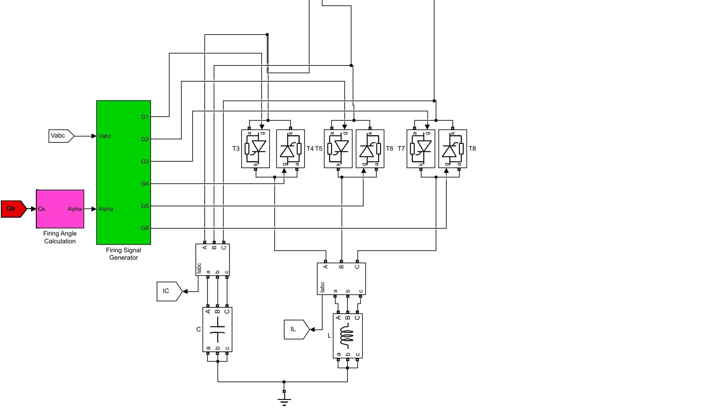

POWER FACTOR CORRECTION USING FC-TCR
Supervisor
Er. Rajendra Dhakal
Er. Rajendra Dhakal
Project Members
Dhan Bahadur Khadka(072-BEL-208)
Surendra Tamang(072-BEL-240)
Vijaya Sharma(072-BEL-245)
Yogesh Karki(072-BEL-247)
August-9,2019
Dhan Bahadur Khadka(072-BEL-208)
Surendra Tamang(072-BEL-240)
Vijaya Sharma(072-BEL-245)
Yogesh Karki(072-BEL-247)
August-9,2019
INTRODUCTION
BACKGROUND- Power factor is the ratio of the real power absorbed by the load to the apparent power flowing in the circuit, and is a dimensionless number in the closed interval of −1 to 1.
- Usually lagging(inductive) and sometimes leading(capacitive) according to load.
- Higher PF is preferred due its several advantages.
- To perform useful work by active power, reactive power is required.
- Inductive loads like motors draw reactive power to maintain magnetic fields
- Low pf causes inefficient use of power
- Systems with low pf draw higher current
- This causes higher losses, damage of equipments, greater financial losses to utilities and higher charges to customers.
- Power factor correction systems have to be applied with low cost, fast response and reliability
- Existing systems are less convenient, with slow response to varying load conditions and less controllable
- To improve the power factor to enhance the power quality of a line
- To optimize the operation of SVC at domestic level.
- To maintain the unity power factor of loads mainly inductive.
LITERATURE REVIEW
- The traditional power factor improvement techniques used are capacitor banks, synchronous condensors and phase advancers
- Fctcr is one of the FACTS technologies for the controllable var generation
- Thus can be used for pf improvement under varying load conditions and voltage regulation

FC-TCR
- FC-TCR
- reactance connected in series with a bidirectional thyristor valve.
- The thyristor valve is phase-controlled, which allows the value of delivered reactive power to be adjusted to meet varying system conditions.
- Narain G. Hingorani and Laszlo Gyugyi pioneered the concept and invented several FACTS controllers including FC-TCR
METHODOLOGY
Basic control diagram


- Measurement of initial reactive power consumed by load
- Comparison with reference reactive power
- Calculation of suitable firing angle with PI controller

- This signal is passed to firing pulse generator
- Firing pulse generator produce the necessary current pulse for the thyristor to turn on
- The reactor absorbs the reactive Power based on the varying fired thyristor angle


CONCLUSION
- Variation of reactive power with firing angle was studied
- Reactive power consumed by inductive loads was compensated by FCTCR
- Power factor was improved continuously for dynamic loads Approximately to unity.
LIMITATIONS
- Our project only deals with inductive loads
- Chances of misfiring of tcr which requires extra tsc circuits and control mechanism would be complex
FUTURE SCOPE
- Can be used for controlling of reactive power for leading loads
- Can be monitored remotely.
REFRENCESES
- Shobha R. Mane,Ashwini Kolekar “Arduino based power factor correction”International journal of electrical,electronics and data communication ISSN:2084 issued on 4 april 2016
- Dhurvang R. Gaikwad, C R Mehta “Automatic reactive power control using FC-TCR”Internation journal of advance computer research ISSN:22497277,volume-4,no-2,15june 2014
- Jitendra Kumar dash “Control statergy for reactive power using using FC-TCR by MATLAB simulink” I.J.EEE, volume-2, E-ISSN: 2310.Issed on 4 august 2015.
- G. Premkumar and B. Muthukumar “ Design, fabrication and implementation of microcontroller controlled SVC” Internation journal of computer application, (0975-8887) volume-81, 19 November 2013
- Sumit k rathod ,Chintan Patel “Simulation and implementation of FC-TCR.” International journal of innovation research in advanced engineering, ISSN no- 2349-2163 volume-1, issued date-4 may 2014.